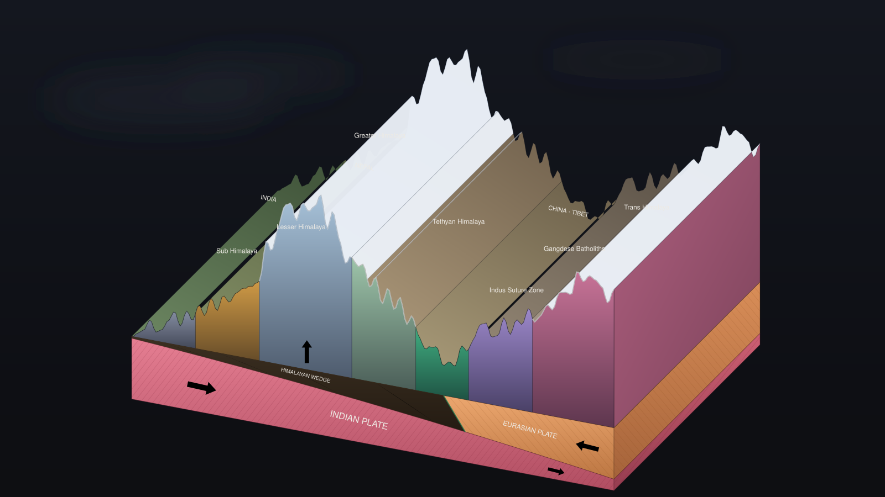
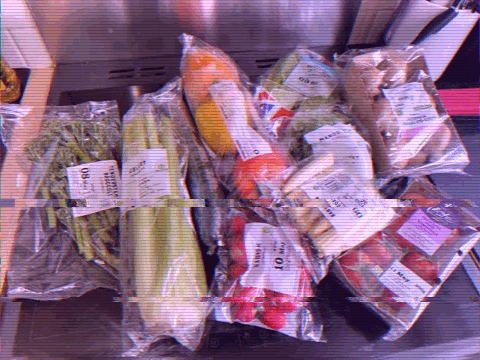

Fellowship
RegenIntel Fellowship
Two research projects on how systems break down and what design can do about it. One looks at a whole bioregion, the other at what is sitting on the shelf at my grocery store.

01 · Group project
Himalayan Bioregion
This one was a group project. We each took a piece of the research, covering the water crisis, waste, tourism, and livelihoods, and then we synthesized all of it to show how it ties back to the polycrisis.
I did research alongside everyone else, and I owned the interactive maps and the layout for the synthesized research.
View project
02 · Research
Plastics in Grocery Stores
I did in depth research on what plastic does to our bodies and to the environment, focused on the packaging that groceries come wrapped in.
From there I moved into solutions. I tried out the bulk food sections at my local grocery stores, put together a social media campaign to get the issue in front of more people, and worked through the pain points and fixes across the whole process.
View project